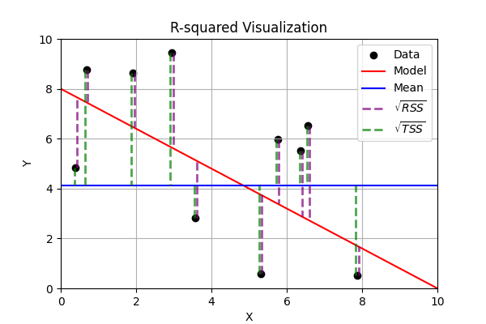
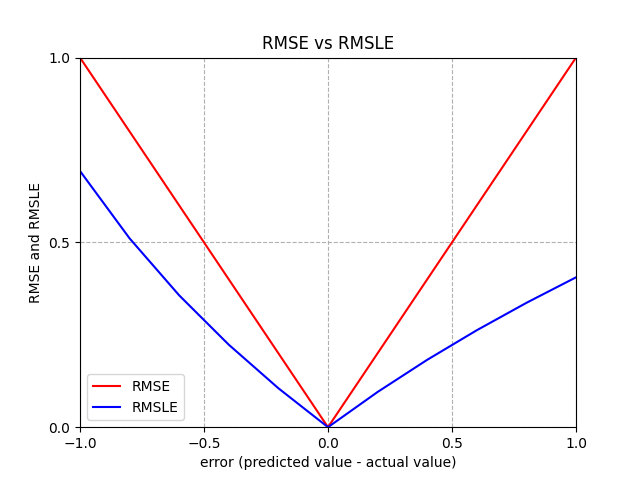

Metrics#
There are a lot of goodness of fit metrics and ways to characterize loss.
Basics#
A model fits the data well when the differences between the observed values and predicted values are small and unbiased
the differences between the
observed valuesandpredicted valuesare calledresidualsas the
goodness of fitincreases, the model is better fitted to the data
Regression Metrics#
Common Terms\(y\) = observed values
\(y_i\) = observed value \(i\)
\(\hat y_i\) = predicted value \(i\)
\(\bar y_i\) = average of the observed values \(i\)
\(n\) = sample size
R-squared(also known as Coefficient of Determination) is the ratio of the variance that’s explained by the model to the variance that’s explained by a simple mean. It’s usually \(0-1\), though it can be negative if the model is worse at explaining variance than just guessing the mean regardless of inputs. \(R^2\) always increases as more independent variables are added, whether or not those variables are useful predictors  R2 – Score: Higher values indicate better fit ranging from 0 to 1.\(R^2=1-\Large\frac{RSS}{TSS}=1-\Large\frac{\sum_{i=1}^n(y_i-\hat y_i)^2}{\sum_{i=1}^n(y_i-\bar y_i)^2}\)
\(RSS\) = Residual Sum of Squares = \(\sum_{i=1}^n(y_i-\hat y_i)^2\)
\(TSS\) = Total Sum of Squares = \(\sum_{i=1}^n(y_i-\bar y_i)^2\)
Adjusted R-squaredis a modification of R-squared that penalizes the inclusion of variables that don’t actually contribute to prediction\(\bar R^2=1-\Large\frac{RSS/DOF_{res}}{TSS/DOF_{tot}}\) \(= 1-(1-R^2)\Large\frac{n-1}{n-p-1}\)
\(DOF_{res}\) = Degrees of Freedom of population variance around mean
\(DOF_{tot}\) = Degrees of Freedom of population variance around model
\(p\) = total number of explanatory variables (inputs)
MAE= Mean Absolute Error - same scale as target variable, robust to outliers, difficult to take derivatives of due to absolute value\(MAE = \frac{1}{n} \sum_{i=1}^n|y_i-\hat{y}_i|\)
NMAE= Normalized Mean Absolute Error - normalizes the absolute error by the range of actual values, making it a relative relative metric\(NMAE = \Large\frac{\frac{1}{n}\sum_{i=1}^n{|\hat{y}_i-y_i|}}{\frac{1}{n}\sum_{i=1}^n{|y_i|}} = \frac{MAE(y,\hat{y})}{mean(|y|)}\)
MSE= Mean Squared Error - vulnerable to outliers because the error is squared\(MSE =\frac{1}{n}\sum_{i=1}^n (\hat{y}_i - y_i)^2\)
Huber Loss: A hybrid loss function that transitions from
MAEtoMSEfor larger errors, providing balance betweenMAE’s robustness andMSE’s sensitivity to outliers.\(L_\delta = \begin{cases}\frac{1}{2}(y-\hat{y})^2 &|y-\hat{y}|<\delta \\ \delta((y-\hat{y})-\frac{1}{2}\delta) & |y-\hat{y}|\ge\delta\end{cases}\)
RMSE= Root Mean Squared Error - same training results as usingMSE, still vulnerable to outliers, compare withMAEto see prevalence of outliers\(RMSE = \sqrt{\frac{1}{n}\sum_{i=1}^n (\hat{y}_i - y_i)^2}\)
RMSLE= Root Mean Squared Log Error - logs make it relative metric (ignore scale of data), less vulnerable to outliers than \(RMSE\), asymmetric (larger penalty if \(\hat{y}_i < y_i\) than if \(\hat{y}_i > y_i\))\(RMSLE = \sqrt{\frac{1}{n}\sum_{i=1}^n (\ln{(\hat{y}_i+1)} - \ln{(y_i+1)})^2} =\Large\sqrt{\frac{1}{n}\sum_{i=1}^n (\ln{\frac{\hat{y}_i+1}{y_i+1}})^2}\)
- 
MAPE= Mean Absolute Percentage Error (AVOID LIKE THE PLAGUE) fails if any \(y_i=0\), higher penalty for small \(y_i\), higher penalty for \(\hat{y}_i > y_i\) than \(\hat{y}_i < y_i\)\(MAPE = \Large\frac{1}{n}\sum_{i=1}^{n}{|\frac{y_i-\hat{y}_i}{y_i}|}*100\)
SMAPE= Symmetric Mean Absolute Percentage Error (AVOID) improves somewhat onMAPEbut still controversial, not symmetric, and the equation itself varies by source\(SMAPE = \Large\frac{1}{n}\sum_{i=1}^{n}{\frac{|y_i-\hat{y}_i|}{y_i+\hat{y}_i}}\)
\(BIC\) = Bayesian Information Criterion evaluates goodness of fit \(-2\ln(L)\) while penalizing complexity to avoid overfitting \(k\ln(n)\)
\(BIC = -2\ln(L) + k\ln(n)\)
\(L\) = likelihood of the model given the data
\(k\) = number of parameters in the model
\(AIC\) = Akaike Information Criterion
\(AIC = 2k - 2 \ln(\hat L)\)
\(\hat L\) = maximized value of the likelihood function for the model
{kind=link}
{kind=link}
Metric |
Penalizes Large Errors |
Sensitive to Outliers |
Interpretability |
Recommended |
|---|---|---|---|---|
MAE |
✗ |
- |
+++ |
✓ |
MSE |
✓ |
+ |
+ |
✓ |
RMSE |
✓ |
+ |
++ |
✓ |
MAPE |
✗ |
Varies |
++ |
✗ |
Classification Metrics#
Accuracy for Classifiers is a little different, and sometimes your priority changes
Sometimes it’s more important to catch everything, even if you catch some false positives
Sometimes it’s more important that you only catch stuff you’re sure about, and no false positives
Results
TP (True Positive): The model
correctlypredicted apositiveoutcomeTN (True Negative): The model
correctlypredicted anegativeoutcomeFP (False Positive): The model
incorrectlypredicted apositiveoutcome (Type I error)FN (False Negative): The model
incorrectlypredicted anegativeoutcome (Type II error)
Can display with a Confusion Matrix
the link also explains the rest of these details and has example
sklearncode to make Confusion Matricesthis one scores a model that was trying to label an image as containing a cat or an ant it did kind of OK (labeled one cat as an ant, but got the others correct)

here’s a mockup of one for a model trying to classify emails as real or spam (though without the counts)
Predicted as Spam |
Predicted as Real |
|
|---|---|---|
Actually was Spam |
TP (True Positive) |
FN (False Negative) |
Actually was Real |
FP (False Positive) |
TN (True Negative) |
Metrics
Accuracy= how many predictions were correct out of the total predictions (can be misleading if one result is more dominant than another)Precision= how many Positive Instances you caught (important if you can’t afford False Positives)Recall= proportion of True Positives detected out of all Positive Instances (important if you can’t afford False Negatives)F1-Score= combines Precision and Recall, assuming False Positives and False Negatives are equally importantSpecificity= how good the model is at correctly identifying Negative InstancesType 1 Error= error from False PositivesType 2 Error= error from False Negatives